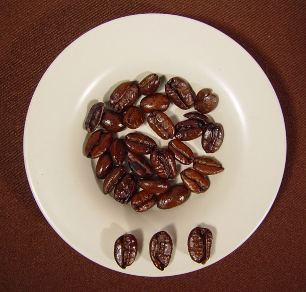

Arabica Beans

Arabica beans make up about 60% of the total world coffee consumption. Roasts made from Arabica beans are considered higher quality and often pricier. Coffee shops typically serve Arabica bean blends. Overall, these beans have more acidity compared to Robusta beans. Arabica beans are grown throughout the Coffee Belt, but mostly in Latin America. Depending on where they grow in the three Coffee Belt regions they can have vastly different flavors. This will be explored later.
Robusta Beans

Robusta coffee beans are the second most used coffee bean. These are what Americans are used to brewing at home and what we purchase in grocery stores. Supermarkets also sell blends with Robusta and Arabica beans too. Robusta beans contain twice as much caffeine as Arabica beans, but look like little balls instead of the typical almond shaped bean we visualize. These are mainly grown in Africa and Indonesia. They are easier to grow than Arabica beans because they can thrive in low or high altitude. The product tends to be harsher and more bitter due to the effects that roasting has on Robusta beans. However, they’re great for making espresso shots because of their deep flavor. This type of bean holds up better when you add cream and sugar, unlike Arabica beans whose flavor tends to change. Robusta beans are grown only on the Eastern Hemisphere, and therefore appear only in two of the three regions in the Coffee Belt, which is explained later.
Liberica Beans
Liberica beans grow only in the Philippines. These beans have a floral, fruity aroma, but produce coffee that has a full body and a woody, smoky flavor. A shortage of Arabica beans in 1890 resulted in the U.S importing Liberica beans from the Philippines. This continued until they claimed independence and the U.S stopped trade.